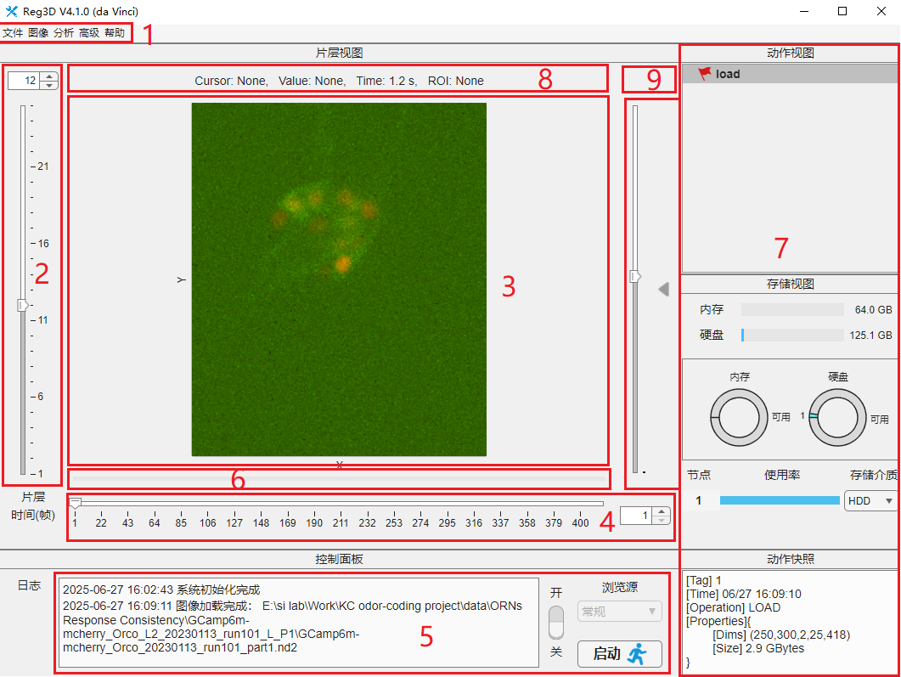

帮助文档(for V2.0.X Wukong)
运行环境：Windows 11/Windows 10/Ubuntu 20.04 LTS + MATLAB R2023a/R2022a&b
一、用户界面

区域1. 菜单栏，包括文件操作、基本图像处理、播放器设置、配准设置导入/导出及帮助文档。
区域2. 片层滑块，上下滑动用于浏览三维体数据不同片层(一般为 Z 方向)，可使用键盘 "UP" 或 "DOWN" 控制。
区域3. 浏览器主窗口。
区域4. 时间滑块，左右滑动用于浏览四维体数据不同帧，可使用键盘 "LEFT" 或 "RIGHT" 控制。
区域5. 控制面板，功能包括控制配准启动、切换浏览源、指示系统状态及显示系统日志。
区域6. 进度条，指示当前操作完成进度，包括数据读取、写入及配准进度。
区域7. 历史管理器，快捷呼出历史管理器子窗口，用于管理相关数据。
区域8. 图像信息，显示当前图像信息，包括鼠标位置，像素值等。
区域9. 更新信息，该位置在有可用更新时可显示三个图标中的一种，分别为：红色甲虫(Debug Channel), 蓝色UFO(Preview Channel) 以及 红色火箭(Release Channel)。点击即可更新，推荐在Release Channel更新程序。
1.菜单栏
1.1 文件
1.1.5 退出
无。
1.2 图像
1.3 选项
1.4 高级
1.5 帮助
1.5.2 文档
无。
2.片层滑块
3.浏览器主窗口
3.2 右键菜单
通过在浏览器主窗口左右空白区域中右键单击唤出右键菜单。
4.时间滑块
5.控制面板
6.进度条
无
7.历史管理器
8.图像信息
图像信息包括鼠标所指像素位置、对应像素值、当前帧时间及ROI大小(如果存在)。
9.更新信息
见摘要：区域9。
二、工作流程